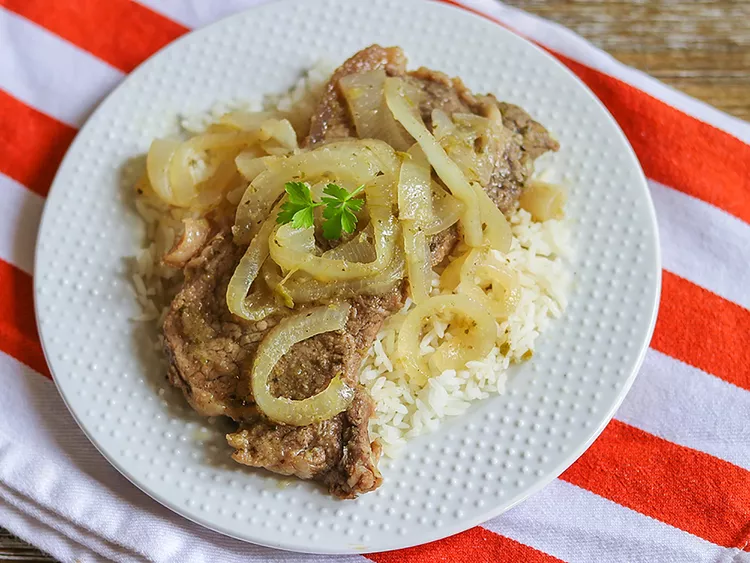

Bistec Encebollado a la Cubana
Description
This Cuban-style steak and onions dish is a flavorful and traditional meal, perfect for serving with white rice, salad, and fried plantains.
Ingredients:
- 1 teaspoon salt
- 1 teaspoon ground black pepper
- 1 teaspoon garlic powder
- 1 (1 pound) New York strip steak, sliced thin
- 3 large onions, thinly sliced
- 2 tablespoons white vinegar
- 1 tablespoon onion powder
- 3 tablespoons olive oil
- ½ cup beef broth
- 2 tablespoons sofrito
- 1 clove garlic, minced
Instructions
- Combine salt, pepper, and garlic powder in a small bowl. Sprinkle over steak slices on all sides to season.
- Transfer steak to a resealable plastic bag and add sliced onions, vinegar, and onion powder. Move steaks around to combine with the marinating ingredients. Seal the bag and refrigerate for 1 hour.
- Heat olive oil in a skillet over medium heat. Add steak and onion mixture; cook and stir until steak is browned and onions are soft, 4 to 6 minutes. Remove from the skillet and keep warm.
- Add beef broth, sofrito, and garlic to the skillet and cook over medium heat until garlic is golden brown, 2 to 3 minutes.
- Add steak and onions back to the skillet, cover, and simmer over low heat until onions and steak are cooked through, about 15 minutes.